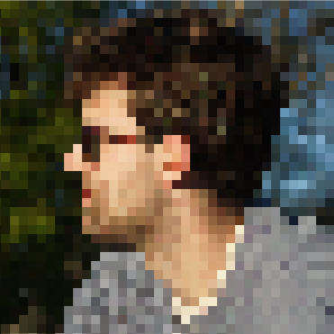

Current Projects
Mystery Project 1
Building and deploying an application for iOS and Android using Flutter.
Algorithm Design for Embedded Systems
Designing a wave-manipulation algorithm for energy saving in LEDs.
[PAPER] Distillation of the DreamerV3 World Model for Efficient Deployment
As a paper for a RL course, we explored world model distillation techniques for improving the efficiency of Dreamer models.
Experience
LLM Engineer at Statistics Netherlands (CBS) (Jan. '25 - Jul. '25)
At my internship, I made a Proof of Concept for querying internal data using LLMs and vector databases. It turned out the organization needed better internal metadata, so I generated metadata using internal documents. After that, I made a functional query system, as a Proof of Concept. I had to build a LangChain-like tool from scratch. Used Python + Streamlit + (Custom-)LangChain
Technical Project Manager at Buro Matthijs (Apr. '24 - Apr. '25)
At BuroMatthijs I managed and designed projects' requirements and tasks for developers to deliver the required client solutions. Next to that, I built insight dashboards for clients operating in varying industries. Used the right tools for the job for each project.
AI Researcher at ASML (Sept. '23 - Jan. '24)
Analyzed the implementation of AI for defect detection in the supply chain.
Full Stack Developer at Clonable (Mar. '22 - Sept. '23)
I had the opportunity to design and build the company website from the ground up. Taught me valuable skills in web development. On top of this, I did work on the backend of the platform. Additionally, this was pre-AI.